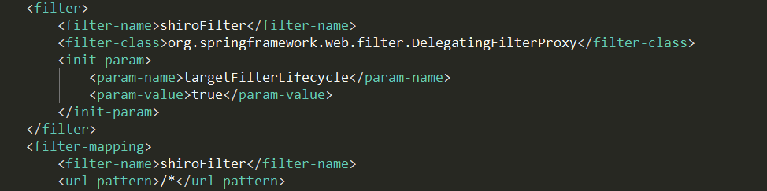
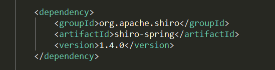
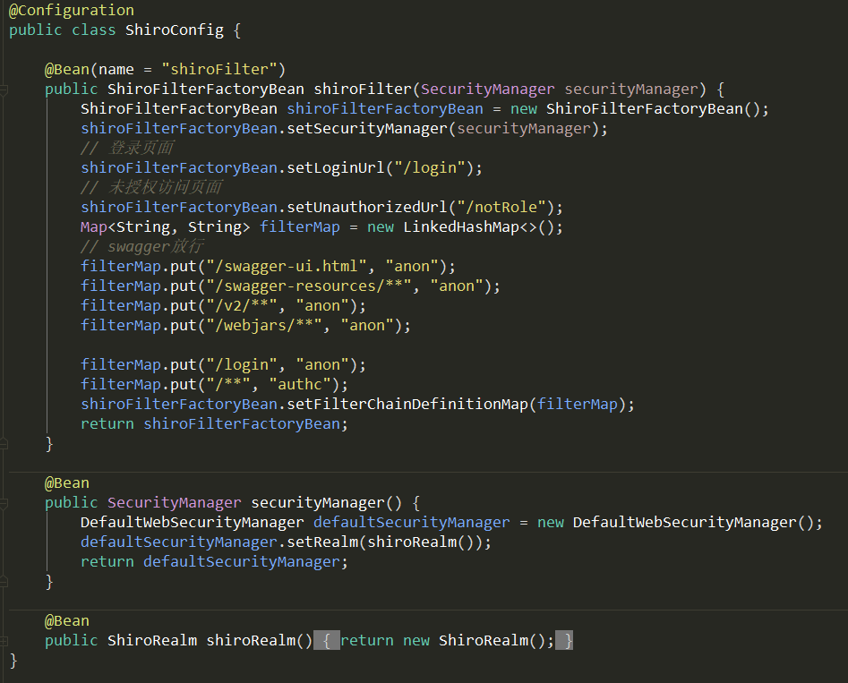
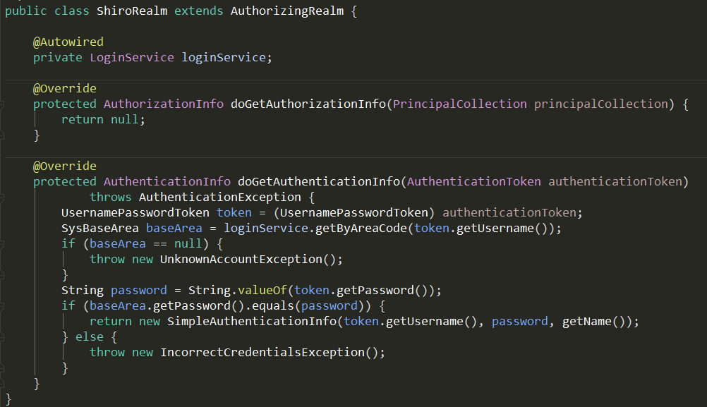
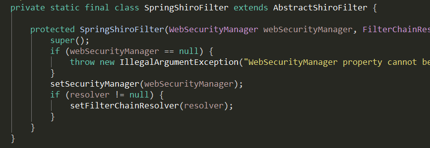

SpringBoot整合Shiro时的思考
在使用SpringBoot整合Shiro的时候，发现无需手动注册过滤器：
在传统的Spring应用中（servlet 3.0以前）使用Shiro进行权限认证，需要在web.xml配置过滤器：

而在SpirngBoot的应用中，引入shiro-spirng：

本以为也要手动注册一个过滤器（
DelegatingFilterProxy），发现只需要编写ShiroConfig和ShiroRealm：（简单实现登录鉴权的功能）

那么Filter的配置在哪？
查看源码后发现，
ShiroFilterFactoryBean实现了FactoryBean接口，getObject()方法返回的是一个静态内部类SpirngShiroFilter的实例对象：
也就是说实际上，注册在IoC容器中的bean是一个继承
Filter接口的实例对象。在Servlet 3.0以前，Filter必须在web.xml中进行配置注册，而Servlet 3.0之后，提供了无配置文件化，以及运行时注册Filter、Servlet的特性，所以我们无需在web.xml配置过滤器。而继承Filter接口的bean，Spring会帮我们将其在Tomcat中注册。有关遗失的web.xml可以查看这篇文章：
https://www.cnkirito.moe/servlet-explore/?utm_source=tuicool&utm_medium=referral
相关版本
ArtifactID 版本 spring-boot-starter-parent 2.1.8.RELEASE shiro-spring 1.4.0
原文作者: chensiqu
原文链接: http://www.csiqu.club/2019/10/24/springboot-shiro-think/
版权声明: 转载请注明出处(必须保留作者署名及链接)